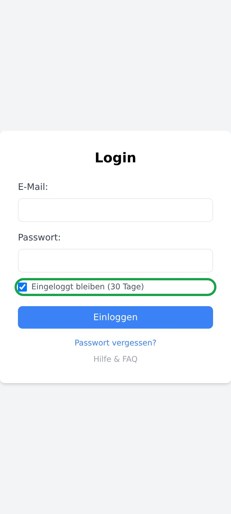
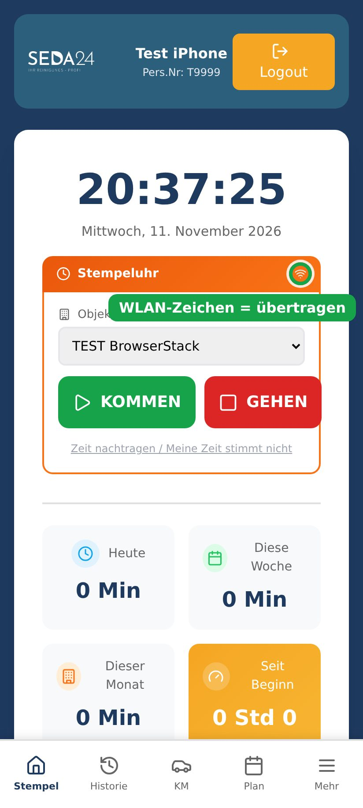
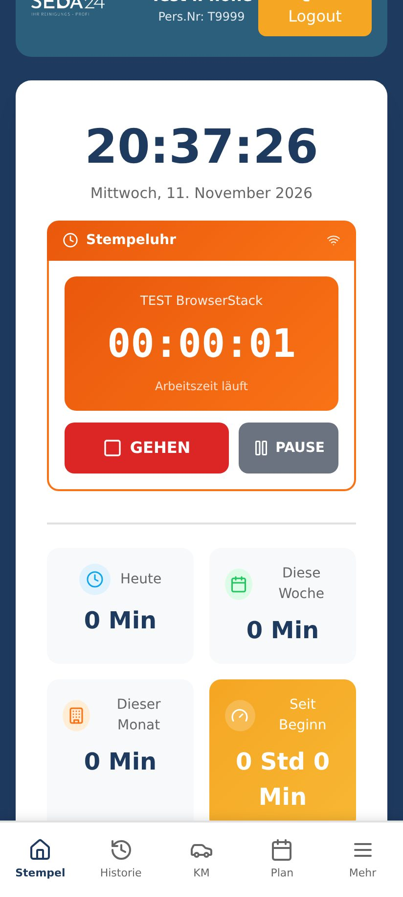
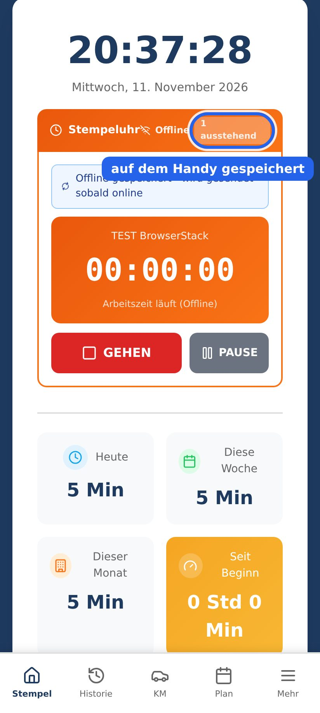
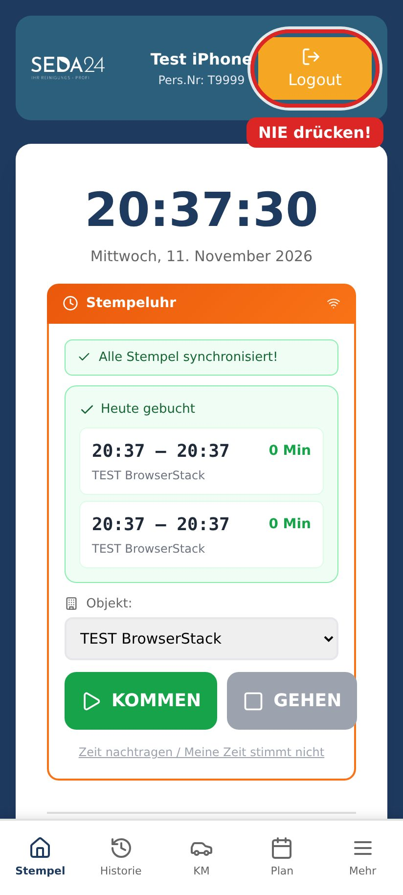
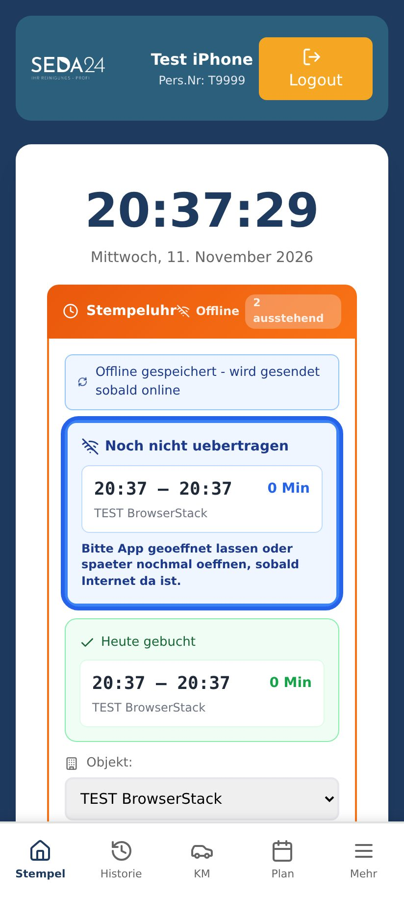
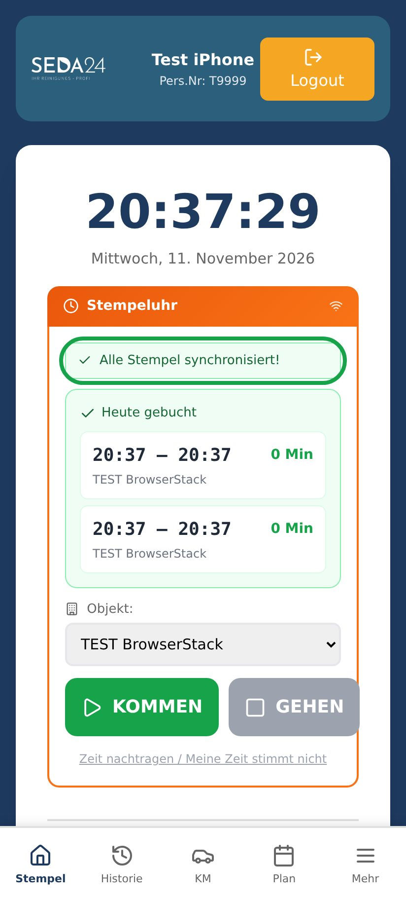

Android – so geht's
SEDA24 App: installieren, stempeln, offline




Drücke die Home-Taste (Kreis unten in der Mitte).
Oder: Wische vom unteren Rand nach oben, wenn dein Handy keine Tasten hat.
Du brauchst keinen Zurück-Pfeil.

Kein Problem. Dein Stempel ist auf dem Handy gespeichert.


Kein Problem. Deine Zeit kannst du auch so eintragen: